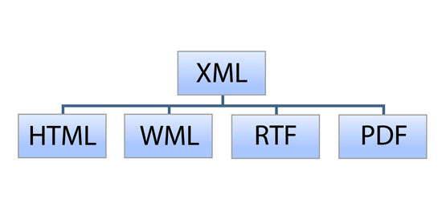
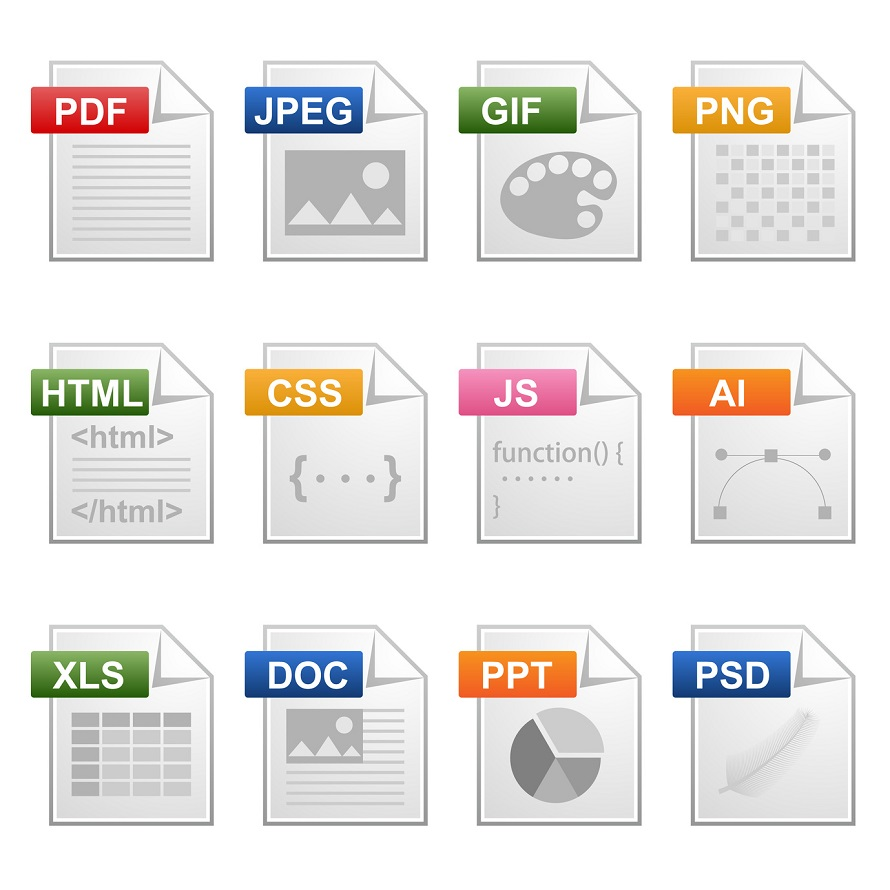

Práctica 4
1.- ¿Que es un XML y para qué sirve?
XML es una herramienta independiente de software y hardware para almacenar y transportar datos. Sirve para representar información estructurada en la web (todos documentos), de modo que esta información pueda ser almacenada, transmitida, procesada, visualizada e impresa, por muy diversos tipos de aplicaciones y dispositivos. Estos archivos son una forma de almacenar datos para que estos sean leídos fácilmente todos los navegadores de forma universal. Se utilizan principalmente para exportar e importar datos de bases de datos de forma universal.

2.- ¿Qué características tiene un documento HTML?
HTML se escribe en forma de «etiquetas» Los elementos tienen dos propiedades básicas: atributos y contenido. Un elemento generalmente tiene una etiqueta de inicio (por ejemplo, <nombre-de-elemento>) y una etiqueta de cierre. Esta consta de un marcado que nos permite indicar la estructura de nuestro documento mediante etiquetas. Y los documentos HTML son documentos de hipertexto que aparecen enlazando a otros documentos.
3.- ¿Qué es y para qué sirve un archivo XHTML?
XHTML es una versión de HTML más estricta y basada en XML.
Se utiliza para marcar contenido como texto, imágenes y enlaces en forma de hipervínculos para crear una cierta estructura que puede ser mostrada por los navegadores. El formato usa etiquetas, al igual que el formato de archivo HTML, pero las páginas del formato XHTML se ajustan a las pautas XML más estrictas que las páginas HTML.

Resumen:
La estructura de la página web se basa en HTML
Los documentos HTML (iniciales de Hypertext Markup Language) utilizan la extensión .htm o .html. Esta extensión avisa al navegador web o a un dispositivo como un teléfono móvil, que en este archivo hay contenido HTML
Cómo se representa el código HTML en el navegador
Cada página comienza con: < HTML >. A continuación, viene la cabecera, delimitada por < HEAD > y < /HEAD >. Después, el comando < BODY >, que indica el comienzo del cuerpo de la página. Las instrucciones HTML se escribirán a continuación, y finalizarán con < /BODY >. La página acabará con < /HTML >.
Detalles de la sintaxis de XHTML
Las etiquetas y atributos de XHTML y HTML siguen siendo las mismas, pero la sintaxis del código XHTML es más estricta. Las diferencias más importantes entre XHTML y HTML son estas: En XHTML, todas las etiquetas deben escribirse en minúsculas. Un documento XHTML debe tener una declaración XHTML <!DOCTYPE>. Los elementos <html> , <head>, <title> y <body> también deben estar presentes, y el atributo xmlns en <html> debe especificar el espacio de nombres xml para el documento.
Estructura HTML
En este ejemplo podemos ver los elementos más básicos que nos vamos a encontrar en prácticamente toda página web:
<html>
<head>
</head>
<body>
</body>
</html>
Insertar imágenes en HTML
Para colocar imágenes dentro de un documento HTML se utiliza la etiqueta <img>. Al igual que ocurre con la etiqueta , la etiqueta de imagen por sí sola no hace nada. Depende del valor de los atributos que especifiquemos, que indican qué imagen se debe mostrar y cómo ha de hacerse.
El papel de CSS
CSS (Cascading Style Sheets) utiliza un lenguaje distinto de HTML. CSS nos permite aplicar estilos de manera coherente a los distintos elementos de las páginas del sitio web, de modo que los títulos, listas y párrafos pueden verse igual en todas y cada una de las páginas.
Cómo hacemos referencia a la sintaxis de CSS en este libro
el siguiente código es lo que conocemos como una regla de CSS:

Los componentes de esta regla son:
A. Selector. B. Declaración. C. Propiedad. D.Valor
Definir un estilo para los títulos
Aplica por diseño a los elementos <h1> a la hora de presentarlos en pantalla. El tamaño, color y tipo de letra los resuelve el navegador ya que no dispone de otras instrucciones de formato. El navegador solo sabe que hay un elemento "heading 1" y lo muestra de la forma en que considera adecuado. Por ejemplo, el tamaño por defecto es 16 pixels, el color es el negro y la fuente, Times New Roman. Esto es lo que nos encontramos, por ejemplo, en Internet Explorer, Firefox y algunos otros navegadores. Ahora podemos modificar esta apariencia con una regla de CSS. En la parte superior de la página busca la etiqueta <title>, y justo debajo de ella,
<style type="text/css">
El elemento <style> queda dentro de las etiquetas delimitadoras de la cabecera <head> de la página. En HTML todo lo que queda dentro de la sección <head> no se muestra en pantalla. Por ejemplo, también tenemos un elemento <title> en esta sección. Este título aparece en la parte superior de la ventana del navegador, pero no dentro de la página propiamente. El título dentro de la etiqueta H1 tiene un nuevo color, por aplicación de una regla CSS.
Notación hexadecimal de color
El color, tanto en HTML como CSS, se designa mediante un código de seis caracteres precedido por el signo de almohadilla. A esta notación se le llama código hexadecimal, y es el sistema que se utiliza para identificar y establecer el color de los elementos. Con esta notación podemos reproducir prácticamente cualquier color. Por ejemplo, el color rojo oscuro se representa como #CC0000. El código se divide en tres pares de dígitos, y cada uno de ellos representa el valor RGB del espectro.
Los estilos de clase y el elemento <span> </span>
Los selectores de etiqueta se utilizan con mucha frecuencia, pero solo se pueden aplicar a elementos HTML. Cuando lo que queremos es modificar el estilo de alguna cosa que no coincide exactamente con una etiqueta, el selector de clase, que es una regla CSS que se puede aplicar a cualquier elemento dentro de una página. Los selectores de clase tienen unas opciones de nomenclatura flexibles, pero es muy conveniente utilizar nombres que describan adecuadamente lo que hacen.
Tres maneras de utilizar estilos
En la práctica anterior los estilos estaban situados dentro de la sección de cabecera (<head>) de la página. Esta modalidad recibe el nombre de hoja de estilos interna. También existen las hojas de estilos externas y los estilos aplicados directamente ("inline").
Una hoja de estilo externa es un documento independiente con la extensión .css. Cuando utilizamos un archivo externo, los estilos se definen en él y en las páginas HTML tenemos que insertar un enlace a dicho archivo. Mientras que las hojas de estilo internas solo se aplican a la página donde residen, las hojas externas se pueden aplicar a múltiples documentos HTML.
Los estilos inline o directos son la tercera posibilidad pero se utilizan mucho menos que las otras dos. En este caso, las reglas se declaran dentro de las propias etiquetas HTML.
Cuándo utilizar hojas de estilo internas y externas
En el caso de las hojas internas, las reglas CSS solo se aplican al documento en donde residen. Por ejemplo, si tenemos un sitio web con 20 páginas y decidimos utilizar hojas de estilo internas, deberemos crear una hoja de estilos dentro de cada una de esas 20 páginas.
En las hojas externas las reglas CSS, Podemos asociar un mismo archivo .css a cualquier página HTML, y con ello nos ahorraremos mucho trabajo y ganamos en flexibilidad. Si definimos una regla para el elemento <p> en una hoja de estilo externa, todos los párrafos del sitio web quedan modificados de inmediato
Creación de una hoja de estilos externa:
Una página HTML no tiene por qué limitarse a utilizar solamente una hoja de estilos externa, y en muchos sitios web de grandes dimensiones, las definiciones de estilos suelen repartirse entre varios archivos, para facilitar su organización y mantenimiento. Podemos incluso utilizar hojas de estilos para funciones concretas, como imprimir una página o visualizar el contenido en dispositivos móviles. Se pueden diseñar hojas de estilo también para que nuestros sitios web sean compatibles con navegadores antiguos.
En qué consisten los estilos en cascada:
La hoja de estilo interna tiene precedencia sobre cualquier otra externa, y las definiciones utilizadas en hojas de estilo externas se utilizan solo si no entran en conflicto con las declaraciones internas o directas.
Uso de textos y tipos de letra en la web:A la hora de diseñar para la web, podemos formatear el texto de una forma parecida a como se hace en las aplicaciones de procesamiento de textos y diseño publicitario de los equipos de escritorio, pero debemos tener en cuenta algunas diferencias importantes. Cuando especificamos el uso de una fuente (tipo de letra) concreta, esta fuente ha de estar instalada en el ordenador o el dispositivo del usuario donde se va a restituir la página. Si el ordenador o dispositivo no dispone de esa fuente, el navegador la sustituye por otra.
Tipos de letra de uso común en la web:
Estas son las Fuentes que podemos utilizar con más confianza en la Web:
- Arial
- Verdana
- Georgia
- Times New Roman
- Courier
- Trebuchet
- Lucida
- Tahoma
- Impact
Cambiar el tamaño del texto con CSS
Cuando utilizamos CSS para formatear textos para la web, disponemos de algunas opciones para establecer su tamaño y su grosor. La propiedad CSS que controla el tamaño del texto se llama font-size.
Podemos modificar el valor de la propiedad font-size de varias formas:
• Tamaño absoluto: se trata de una serie de palabras clave que indican tamaños predefinidos de letra. Los tamaños nominados escalan de acuerdo con las preferencias del usuario con respecto a la letra. Los valores posibles xx-small, x-small, small, medium, large, x-large y xx-large.
• Longitud: Es un número seguido de un indicador del sistema de medida (cm, mm, in, pt, o pc) o bien un de unidades relativas (em, ex, o px).
• Porcentaje: Un entero seguido del signo de porcentaje (%). El valor es un tanto por ciento del tamaño de letra del objeto padre.
• Tamaño relativo: una serie de palabras clave que se interpretan como relativas al tamaño de letra del objeto padre. Los valores posibles son larger y smaller.
Las medidas en pixels y puntos no son la mejor opción para el tamaño:
La declaración del tamaño de letra en puntos puede ser algo obvio si vienes del mundo de las artes gráficas, y si tienes experiencia con el diseño gráfico por ordenador, seguramente te manejarás muy bien usando los pixels como unidad de medida. La propiedad font-size en CSS nos permite utilizar ambas unidades.
Uso de una combinación de porcentaje y medida "em"
Una forma de resolver el problema del cambio de tamaño de los textos que causa el uso de pixels consiste en aplicar otras unidades de medida. Aquí vamos a establecer un cambio de tamaño fiable combinando el porcentaje y la unidad "em".